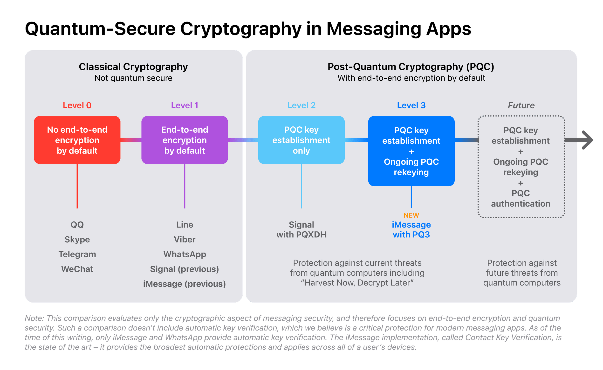

Introduction
In the ever-evolving landscape of digital security, staying ahead of emerging threats is not just a priority—it's a necessity. Today, I am proud to announce the successful implementation of a groundbreaking cryptographic protocol that pushes the boundaries of what we once thought possible: the "Beyond Level 3" security model. This new protocol represents the cutting edge of secure communication, utilizing Kyber for post-quantum encryption and Dilithium for quantum-resistant authentication.
The Need for "Beyond Level 3" Security
As we stand on the cusp of the quantum computing era, the cryptographic foundations that have protected our data for decades are at risk. Classical cryptography, once deemed unbreakable, is becoming increasingly vulnerable as quantum computers progress toward practical application. This impending reality has driven the cryptographic community to develop new standards that can withstand the computational power of quantum machines.
While recent advances, such as Apple's PQ3 protocol, have introduced post-quantum cryptography (PQC) into mainstream applications, there is still more to be done. The journey doesn't end with securing key establishment and message exchanges—authentication, the very mechanism by which we verify identities and trust in communication, must also be fortified against quantum threats.
Introducing Kyber and Dilithium: A Perfect Synergy
The "Beyond Level 3" implementation represents a holistic approach to quantum-resistant security. It goes beyond the capabilities of current cryptographic protocols by integrating both Kyber-based encryption and Dilithium-based authentication, creating a seamless and secure messaging environment.
Kyber for Post-Quantum Encryption
Kyber, selected by NIST as a leading post-quantum key encapsulation mechanism (KEM), forms the backbone of our encryption process. Kyber's lattice-based design ensures that even if quantum computers become capable of breaking traditional cryptographic systems, the encryption remains secure. In our implementation, Kyber is employed from the very first message exchange, ensuring that all communication is protected from both current and future adversaries.
To maximize security, we incorporated Kyber into the initial key establishment phase. This means that every message exchanged is shielded by quantum-resistant encryption to further enhance security.
Dilithium for Quantum-Resistant Authentication
While Kyber secures the content of communication, Dilithium ensures that the identities of the communicating parties are authenticated in a quantum-resistant manner. Dilithium, also part of NIST's suite of post-quantum algorithms, is a lattice-based digital signature scheme designed to be secure against quantum attacks.
Our implementation uses Dilithium to sign every message, ensuring that only the intended recipients can verify the authenticity of the communication. This provides an additional layer of security, safeguarding against man-in-the-middle attacks and ensuring the integrity of the message.
The combination of Kyber and Dilithium creates a robust security framework that not only protects the content of the communication but also guarantees the authenticity of the parties involved.
Key Highlights
- Kyber for Post-Quantum Encryption
- Dilithium for Quantum-Resistant Authentication
- Seamless Integration of Encryption and Authentication
- Quantum-Resistant Key Establishment
- Secure Message Exchange
A New Era of Cryptographic Assurance
This "Beyond Level 3" implementation represents a new standard in cryptographic security—one that is prepared for the challenges posed by the quantum era. By integrating post-quantum encryption and authentication into a single, cohesive protocol, a messaging system can offer unparalleled protection.
The formal verification of this protocol was a critical step in its development. Using rigorous mathematical proofs and symbolic evaluation, it is ensured that the protocol not only meets but exceeds the highest security standards. This verification process, coupled with extensive peer review, provides strong assurances that our implementation is secure against both classical and quantum adversaries.
Quantum computers could imperil the security of confidential electronic information, such as emails. To counter this threat, NIST has finalized its set of three encryption algorithms designed to withstand a future quantum computer’s cyberattacks: https://t.co/WYNO9j7Owz pic.twitter.com/o8TjLzv43p
— National Institute of Standards and Technology (@NIST) August 13, 2024
Looking Ahead
As quantum computing continues to advance, the need for secure, quantum-resistant communication will only grow. Our "Beyond Level 3" implementation is not just a response to this need—it's a proactive step forward, setting a new benchmark for the industry.
This implementation marks the beginning of a new era in cryptographic security. It is my hope that this work will inspire others to continue pushing the boundaries of what is possible, ensuring that our digital communications remain secure in the face of even the most formidable technological advancements.